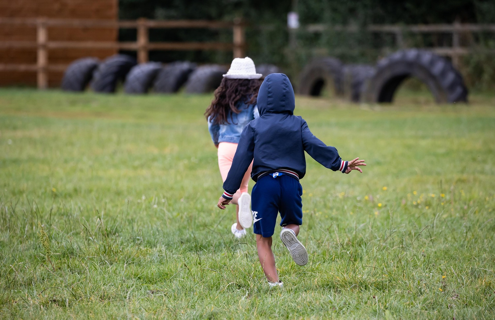
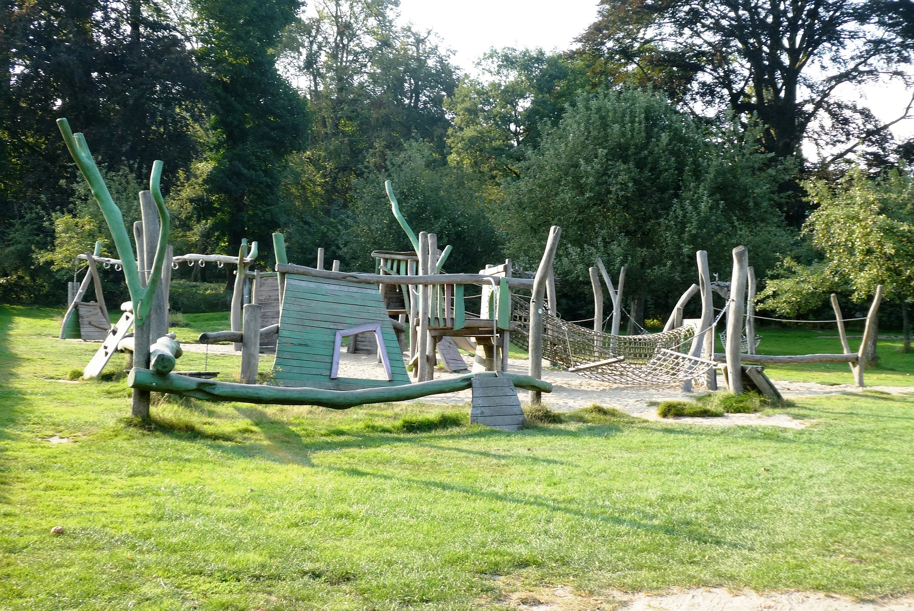
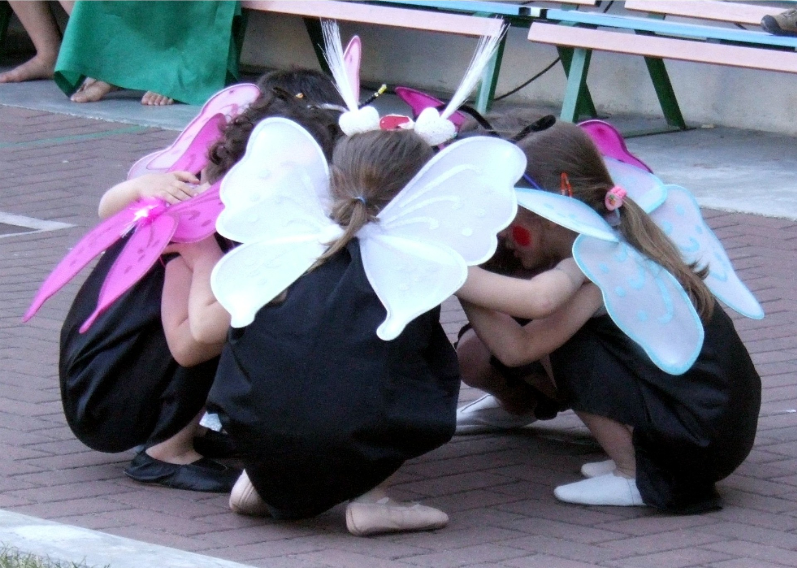

Presentation de l'entreprise
La Garderie Les Explorateurs est un milieu éducatif chaleureux et sécuritaire où chaque enfant est accueilli avec respect, douceur et bienveillance. Notre mission est d’offrir un environnement stimulant qui encourage la curiosité naturelle des tout-petits, tout en soutenant leur développement global. Grâce à une approche pédagogique centrée sur l’exploration, le jeu et la découverte, nous accompagnons chaque enfant dans ses premiers pas vers l’autonomie, la confiance en soi et l’épanouissement personnel.
Notre équipe d’éducatrices qualifiées s’engage à créer un climat positif où chaque enfant se sent valorisé, écouté et encouragé. À travers des activités variées — ateliers créatifs, jeux éducatifs, sorties, éveil sensoriel et motricité — nous offrons un cadre riche en expériences qui favorise l’apprentissage naturel. À la Garderie Les Explorateurs, chaque journée est une nouvelle aventure, et chaque enfant est un petit explorateur prêt à découvrir le monde à son rythme.
Nos enfants sont heureux avec nous

Brève description des services
La Garderie Les Explorateurs offre un ensemble de services éducatifs conçus pour soutenir le développement global des tout-petits. Nous proposons un programme structuré adapté à chaque groupe d’âge, incluant des activités d’éveil, de motricité, de créativité, de langage et de socialisation. Chaque journée est soigneusement planifiée pour offrir un équilibre entre apprentissage, jeu libre, repos et exploration, dans un environnement sécuritaire et bienveillant.
Nous mettons également à la disposition des familles un service de communication continue, des repas équilibrés, un suivi personnalisé du développement de l’enfant et un encadrement assuré par une équipe d’éducatrices qualifiées. Notre objectif est d’offrir un milieu stimulant où chaque enfant peut s’épanouir à son rythme, découvrir le monde et développer sa confiance en lui.
Nous priorisons l'éducation de vos enfants


Nous donnons toujours plus a vos enfants
Nos enfants avec la nature
À la Garderie Les Explorateurs, nous croyons que la nature est un terrain d’apprentissage exceptionnel. Chaque semaine, les enfants profitent d’activités extérieures qui stimulent leur curiosité, renforcent leur motricité et éveillent leurs sens. Qu’il s’agisse d’observer les feuilles, toucher la terre, écouter les oiseaux ou simplement courir au grand air, chaque moment passé dehors devient une occasion de découvrir le monde et de s’épanouir en toute liberté.
Nos exploratrices s'assoient tranquillement dans la nature et essaint de créer un nouveau mode de communication.
Nos explorateurs sont toujours content pour decouvrir de nouvelles choses sur la nature.

Nos enfants sont libres de jouer dans la nature et se familliarisent entre eux.
Nos explorateurs aiment et observent les animaux.

Nous avons une place naturelle agréable pour nos explorateurs. Cette place naturelle fait le bonheur de nos explorateurs.
Nos enfants sont excellents dans divers domaines
